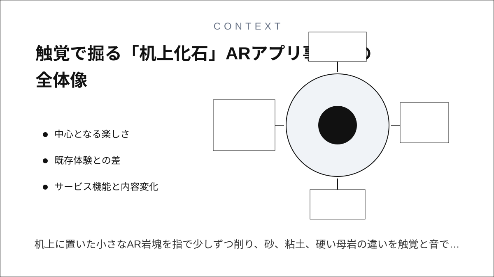
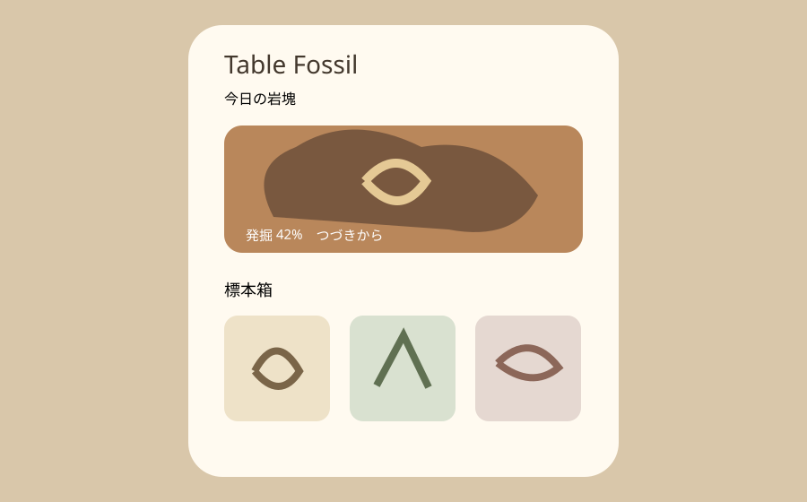
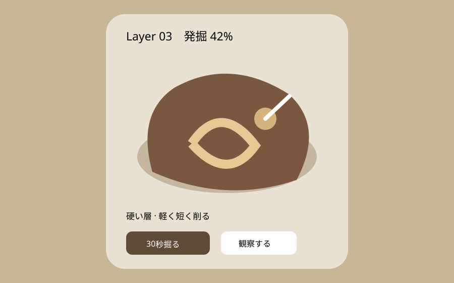
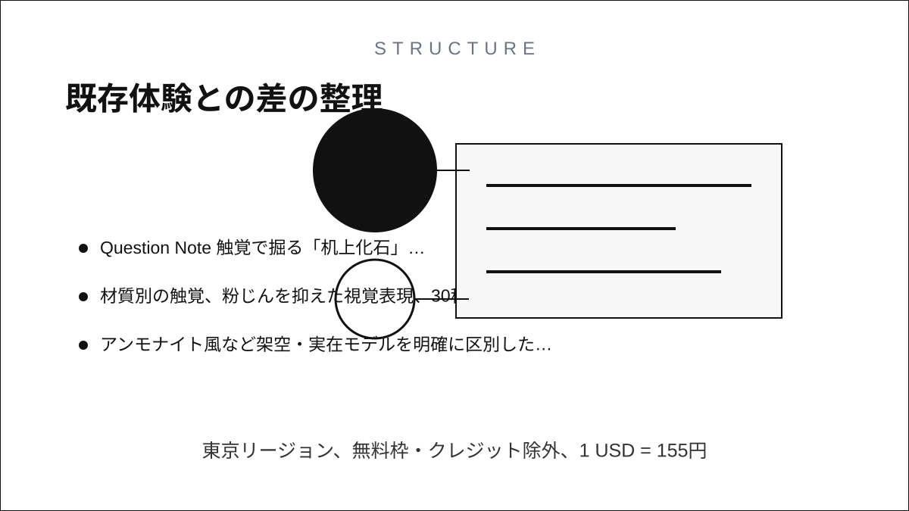
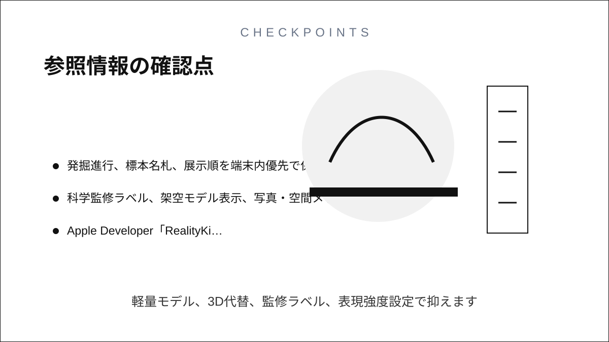

Question Note
触覚で掘る「机上化石」ARアプリ事業案



中心となる楽しさ
机上に置いた小さなAR岩塊を指で少しずつ削り、砂、粘土、硬い母岩の違いを触覚と音で感じながら、30秒ずつ数日かけて標本を露出する玩具です。RealityKitは現実空間に3D内容を置き、SwiftUIジェスチャをエンティティへ渡せます。Core Hapticsで材質ごとの強度・鋭さを変えます。

利用トリガーは机に座った休憩時。岩塊を置く → 30秒掘る → 露出部分を観察する → 名札を付けて展示箱で眺めるが中心ループです。実物採集や科学的同定を代替せず、架空標本には明示します。
既存体験との差
| 比較 | 本案の価値 | 保持・支払い理由 |
|---|---|---|
| AR展示 | 置いて眺めるだけでなく層を削る | 発掘途中が翌日に残る |
| 放置収集ゲーム | 待ち時間でなく手触りと観察が進行条件 | 標本箱を自分の順番で構成できる |
| 物理キット | 粉や道具を増やさず短時間 | 地層・化石パックと精密な3D造形 |
紙、電話、チャット、表計算では、机の表面に固定された立体物を触覚付きで段階的に掘る体験を作れません。
サービス機能と内容変化
- 平面検出で机上に岩塊を配置し、タッチ・Apple Pencilで削る
- 材質別の触覚、粉じんを抑えた視覚表現、30秒の終了合図
- アンモナイト風など架空・実在モデルを明確に区別した標本カード
- 週替わり地層、展示箱、拡大観察、色覚・触覚・ARなし代替
- 地層パック、購入復元、任意同期、端末内の進行保存
100万円規模の収益
AR玩具とミニチュア収集を好む層へ、900人 × 年額900円 + 700地層パック × 300円 = 売上1,020,000円。無料岩塊2個から年額版24個へ移行し、造形テーマは買い切りにします。
システム要件
- SwiftUI、RealityKit、ARKit、Core Haptics、StoreKit
- 端末対応判定、十分な明るさと机上スペース案内、ARなし3Dモード
- 発掘進行、標本名札、展示順を端末内優先で保存
- 科学監修ラベル、架空モデル表示、写真・空間メッシュを送信しない
AWSシステム要件と支出
東京リージョン、無料枠・クレジット除外、1 USD = 155円。公開前にAWS Pricing Calculatorで再計算します。
| AWS | 用途 | 想定 | 月額 | 年額 |
|---|---|---|---|---|
| S3 + CloudFront | 3D岩塊・標本カード配信 | 45GB、月12万配信 | 2,000円 | 24,000円 |
| Cognito | 任意同期アカウント | 1,600 MAU | 1,600円 | 19,200円 |
| API Gateway | 進行・購入復元API | 月24万req | 800円 | 9,600円 |
| Lambda | 同期・素材配信判定・匿名集計 | 月24万実行 | 1,000円 | 12,000円 |
| DynamoDB | 匿名ユーザーID、所有岩塊・地層、発掘進行率、発見標本、名札、展示順、同期版、購入権利、端末互換設定 | 6万件、on-demand | 1,600円 | 19,200円 |
| SES | サポート・購入復元案内 | 月1,000通 | 300円 | 3,600円 |
| CloudWatch | API・素材エラー監視 | 月4GB | 1,000円 | 12,000円 |
| AWS Backup | 購入権利・進行保全 | 月15GB | 600円 | 7,200円 |
| AWS Budgets | 予算超過通知 | 2予算 | 200円 | 2,400円 |
| Route 53 | サポートサイトDNS | 1 zone | 100円 | 1,200円 |
| 合計 | AWS利用料 | 9,200円 | 110,400円 | |
開発、人員、利益
AIでSwiftUI、エンティティ状態、削りマスク、端末差テストの初稿を作り、体験設計2週、AR試作3週、本実装6週、実機・監修検証4週の15週。1人が企画・実装・運営を担い、3D造形20万円、古生物監修8万円、アクセシビリティ・端末QA8万円を外注します。
支出はAWS 110,400円、Apple Developer Program等2万円、外注360,000円、マーケティング150,000円、予備費80,000円の計720,400円。売上 - 支出 = 利益より1,020,000円 - 720,400円 = 299,600円です。
最初の実証とリスク
3岩塊を20人に7日間試してもらい、再訪率、30秒完了率、AR再配置失敗、酔い・疲労、標本箱閲覧を測ります。端末発熱、机認識失敗、誤った科学情報、過度な粉じん表現がリスクです。軽量モデル、3D代替、監修ラベル、表現強度設定で抑えます。
参照情報
- Apple Developer「RealityKit」
- Apple Developer「Responding to gestures on an entity」
- Apple Developer「CHHapticPattern」
- AWS料金
